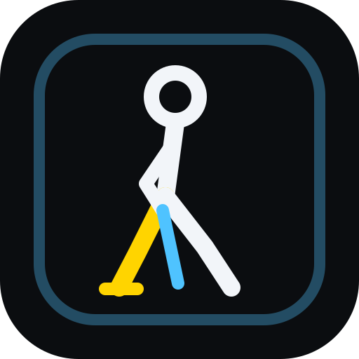

Shadow Mirror
Live feedback for shadow batting
Choose your shot
Session summary
Settings
H = your height in the picture. 0.05 H ≈ 9 cm if you are 183 cm.
How to set up
- Phone upright on a box/chair, lens about 1 m high, 3–4 m away, exactly where the bowler would be.
- Point it straight at you and keep it level (not tilted up or down).
- Stand in the middle of the picture, head to feet visible, with a little space below your feet.
- Tap Start, walk back, take your stance and hold still 2 s to calibrate.
- Play the shot, hold the finish ~½ s, then go back to your stance. Reps are counted automatically.
- Your front (left) leg is yellow. The labels on the screen edges show which side is OFF and LEG (the picture is mirrored like a mirror).
Icons
● ✓ green = good ▲ ! amber = close ■ ✕ red = fix this
Good light
Light on you (not behind you), plain background, shorts or fitted trousers and visible shoes help the tracking. Measure in daylight — evening shadows make feet jumpy.
Tuning (advanced)
Tap the small fps line at the bottom of the live screen to show the debug numbers. After a session, Download recording saves your landmarks (no video). Open it in Lab to re-run it with your current Settings and see which reps change colour.